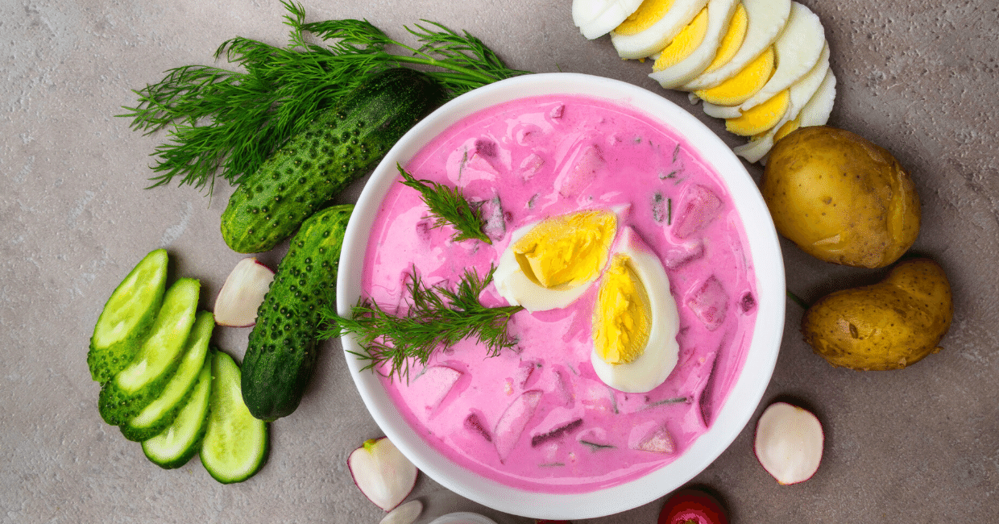

Cold Beetroot Soup

Refreshing soup for hot summer days
This Lithuanian family recipe from the old country makes an awesome summer soup! Serve with warm Yukon Gold potatoes.
Ingredients
- 4 Eggs
- 1 Litre of kefir
- 5 Beets
- 1 Cucumber
- 4 Heads of spring onion
- Bunch of fresh dill
Steps
- Place the eggs into a saucepan in a single layer and cover the eggs with water by 1 inch. Cover the saucepan and bring the water to a boil. Remove from the heat and let the eggs stand in the hot water for 15 minutes; drain. Cool the eggs under cold running water in the sink. Peel and chop the eggs.
- Grate the beets. Chop the cucumber, chives and spring onions
- Pour the buttermilk into a large bowl; add the eggs, beets, cucumber, chives, and dill. Stir gently to combine. Chill in refrigerator for 1 full day before serving.